20. Sicherung des Webdienstes für den Zugriff auf die Datenbank [dbproduitscategories]
20.1. Einrichten der Entwicklungsumgebung
Wir werden die Webservice-Sicherheit mithilfe der folgenden Projekte implementieren:
 |
- Die [spring-security-*]-Projekte befinden sich im Ordner [<examples>\spring-database-generic\spring-security];
- Die Sicherheit für das MySQL-DBMS wird mithilfe einer [DAO / JDBC]-Schicht und einer darauf aufbauenden [DAO / JPA / Hibernate]-Schicht implementiert;
- Drücken Sie Alt-F5 und generieren Sie anschließend alle Maven-Projekte neu;
Wir müssen Benutzer in der Datenbank [dbproduitscategories] anlegen. Verwenden Sie dazu die Ausführungskonfiguration [spring-security-create-users-hibernate-eclipselink]:
 |  |
Durch Ausführen dieser Konfiguration werden die Tabellen [USERS, ROLES, USERS_ROLES] in der Datenbank [dbproduitscategories] gefüllt:
 |
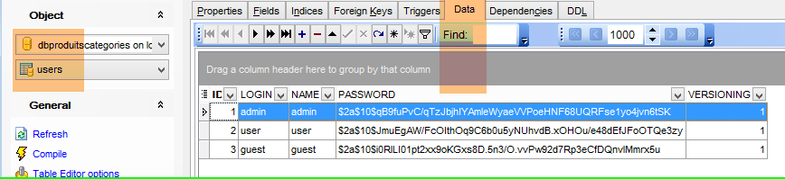 |
Die erstellten Anmeldedaten [Benutzername/Passwort] lauten wie folgt: [admin/admin], [user/user], [guest/guest]. In der Datenbank sind die Passwörter verschlüsselt.
 |

Sobald dies erledigt ist, führen Sie die Testkonfiguration mit dem Namen [spring-security-server-jpa-generic-hibernate-eclipselink] aus, wodurch der sichere Webdienst gestartet wird (MySQL muss laufen):
 |  |
Führen Sie anschließend die Testkonfiguration mit dem Namen [spring-security-client-generic-JUnitTestDao] aus, die den sicheren Webdienst testet:
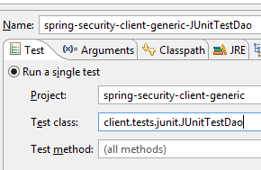 |  |
Der Test sollte erfolgreich sein.
20.2. Das Eclipse-Projekt [spring-security-server-jdbc-generic]
Der sichere Webdienst wird durch das Projekt [spring-security-server-jdbc-generic] implementiert:
 |
Oben:
- Die [DAO1]-Schicht ist die [DAO]-Schicht, die die Tabellen [PRODUCTS] und [CATEGORIES] in der Datenbank [dbproduitscategories] verwaltet. Sie wurde bereits geschrieben;
- Die [DAO2]-Schicht ist die [DAO]-Schicht, die die Tabellen [USERS], [ROLES] und [USERS_ROLES] in der Datenbank [dbproduitscategories] verwaltet. Sie muss noch geschrieben werden;
 |
20.2.1. Die Maven-Konfiguration
Das Projekt [spring-security-server-jdbc-generic] ist ein Maven-Projekt, das durch die folgende [pom.xml]-Datei konfiguriert wird:
<project xmlns="http://maven.apache.org/POM/4.0.0" xmlns:xsi="http://www.w3.org/2001/XMLSchema-instance"
xsi:schemaLocation="http://maven.apache.org/POM/4.0.0 http://maven.apache.org/xsd/maven-4.0.0.xsd">
<modelVersion>4.0.0</modelVersion>
<groupId>dvp.spring.database</groupId>
<artifactId>spring-security-server-jdbc-generic</artifactId>
<version>0.0.1-SNAPSHOT</version>
<name>spring-security-server-jdbc-generic</name>
<description>démo spring security</description>
<properties>
<project.build.sourceEncoding>UTF-8</project.build.sourceEncoding>
<java.version>1.7</java.version>
</properties>
<parent>
<groupId>org.springframework.boot</groupId>
<artifactId>spring-boot-starter-parent</artifactId>
<version>1.2.3.RELEASE</version>
</parent>
<dependencies>
<!-- Spring security -->
<dependency>
<groupId>org.springframework.boot</groupId>
<artifactId>spring-boot-starter-security</artifactId>
</dependency>
<!-- web server / jSON -->
<dependency>
<groupId>dvp.spring.database</groupId>
<artifactId>spring-webjson-server-jdbc-generic</artifactId>
<version>0.0.1-SNAPSHOT</version>
</dependency>
</dependencies>
<!-- plugins -->
<build>
<plugins>
<plugin>
<groupId>org.apache.maven.plugins</groupId>
<artifactId>maven-surefire-plugin</artifactId>
<version>2.18.1</version>
</plugin>
</plugins>
</build>
</project>
- Zeilen 29–33: Wir verwenden den vorhandenen Code aus dem zuvor untersuchten Webservice-/JSON-/JDBC-Archiv wieder;
- Zeilen 24–27: die Abhängigkeit, die die Spring Security-Klassen einbindet;
Letztendlich hat das Projekt die folgenden Abhängigkeiten zu den anderen in Eclipse geladenen Projekten:
 |
20.2.2. Die [DAO2]-Schicht
 |
Oben:
- Die [DAO1]-Schicht ist die [DAO]-Schicht, die die Tabellen [PRODUCTS] und [CATEGORIES] in der Datenbank [dbproduitscategories] verwaltet. Sie wurde bereits geschrieben;
- Die [DAO2]-Schicht ist die [DAO]-Schicht, die die Tabellen [USERS], [ROLES] und [USERS_ROLES] in der Datenbank [dbproduitscategories] verwaltet. Diese werden wir nun schreiben;
 |
Für Spring Security muss eine Klasse erstellt werden, die die folgende [UsersDetail]-Schnittstelle implementiert:
 |
Diese Schnittstelle wird hier durch die Klasse [AppUserDetails] implementiert:
package spring.security.dao;
import generic.jdbc.config.ConfigJdbc;
import java.sql.ResultSet;
import java.sql.SQLException;
import java.util.ArrayList;
import java.util.Collection;
import java.util.Collections;
import java.util.List;
import org.springframework.jdbc.core.RowMapper;
import org.springframework.jdbc.core.namedparam.NamedParameterJdbcTemplate;
import org.springframework.security.core.GrantedAuthority;
import org.springframework.security.core.authority.SimpleGrantedAuthority;
import org.springframework.security.core.userdetails.UserDetails;
import spring.jdbc.entities.Role;
import spring.jdbc.entities.User;
import spring.jdbc.infrastructure.DaoException;
public class AppUserDetails implements UserDetails {
private static final long serialVersionUID = 1L;
// JdbcTemplate
private NamedParameterJdbcTemplate namedParameterJdbcTemplate;
// properties
private User user;
private String simpleClassName = getClass().getSimpleName();
// manufacturers
public AppUserDetails() {
}
public AppUserDetails(User user, NamedParameterJdbcTemplate namedParameterJdbcTemplate) {
this.user = user;
this.namedParameterJdbcTemplate = namedParameterJdbcTemplate;
}
// -------------------------interface
@Override
public Collection<? extends GrantedAuthority> getAuthorities() {
Collection<GrantedAuthority> authorities = new ArrayList<>();
for (Role role : getRoles(user.getId())) {
authorities.add(new SimpleGrantedAuthority(role.getName()));
}
return authorities;
}
...
// méthodes privées----------------
private List<Role> getRoles(Long id) {
try {
// search for the user by id
return namedParameterJdbcTemplate.query(ConfigJdbc.SELECT_ROLES_BYUSERID, Collections.singletonMap("id", id), new ShortRoleMapper());
} catch (Exception e) {
//e.printStackTrace();
throw new DaoException(167, e, simpleClassName);
}
}
}
// --------------------- mappers
class ShortRoleMapper implements RowMapper<Role> {
@Override
public Role mapRow(ResultSet rs, int rowNum) throws SQLException {
return new Role(rs.getLong("r_ID"), rs.getLong("r_VERSIONING"), rs.getString("r_NAME"));
}
}
- Zeile 22: Die Klasse [AppUserDetails] implementiert die Schnittstelle [UserDetails];
- Zeilen 29–30: Die Klasse kapselt einen Benutzer (Zeile 19) und das Repository, das Details zu diesem Benutzer bereitstellt (Zeile 20);
- Zeile 27: Der Zugriff auf die Datenbank erfolgt über JDBC unter Verwendung des im Projekt [spring-jdbc-generic-04] definierten Objekts [NamedParameterJdbcTemplate namedParameterJdbcTemplate]. Beachten Sie, dass dieses Objekt nicht wie üblich von Spring injiziert wird. Es wird dem Konstruktor in den Zeilen 36–39 übergeben. Warum? Weil die Klasse [AppUserDetails] keine Spring-Komponente ist (es fehlt die Annotation @Component) und daher nicht injiziert werden kann;
- Zeilen 36–39: Der Konstruktor, der die Klasse mit einem Benutzer und dessen Repository instanziiert;
- Zeilen 42–49: Implementierung der Methode [getAuthorities] der Schnittstelle [UserDetails]. Sie muss eine Sammlung von Elementen des Typs [GrantedAuthority] oder eines abgeleiteten Typs erstellen. Hier verwenden wir den abgeleiteten Typ [SimpleGrantedAuthority] (Zeile 46), der den Namen einer der Rollen des Benutzers aus Zeile 29 kapselt;
- Zeilen 45–47: Wir durchlaufen die Liste der Rollen des Benutzers aus Zeile 29, um eine Liste von Elementen vom Typ [SimpleGrantedAuthority] zu erstellen;
- Zeile 45: Um die Rollen des Benutzers abzurufen, verwenden wir die private Methode [getRoles] aus Zeile 53;
- Zeile 56: führt die folgende SQL-Anweisung [ConfigJdbc.SELECT_ROLES_BYUSERID] (definiert in [ConfigJdbc]) aus:
public static final String SELECT_ROLES_BYUSERID = "SELECT DISTINCT r.ID as r_ID, r.VERSIONING as r_VERSIONING, r.NAME as r_NAME FROM ROLES r, USERS u, USERS_ROLES ur WHERE u.ID=:id AND ur.USER_ID=u.ID AND ur.ROLE_ID=r.ID";
Diese SQL-Abfrage führt eine Verknüpfung zwischen den drei Tabellen [USERS, ROLES, USERS_ROLES] durch, um die Rollen eines Benutzers abzurufen, der durch seinen Primärschlüssel identifiziert wird. Sie wird durch den Primärschlüssel [:id] des Benutzers parametrisiert, dessen Rollen abgefragt werden.
- Zeile 56: Jede Ergebniszeile aus dem [SELECT] wird in den Zeilen 66–72 von der Klasse [ShortRowMapper] in eine [Role]-Entität umgewandelt;
Kehren wir zum Code für die Klasse [AppUserDetails] zurück:
package spring.security.dao;
...
public class AppUserDetails implements UserDetails {
private static final long serialVersionUID = 1L;
// JdbcTemplate
private NamedParameterJdbcTemplate namedParameterJdbcTemplate;
// properties
private User user;
private String simpleClassName = getClass().getSimpleName();
// manufacturers
public AppUserDetails() {
}
public AppUserDetails(User user, NamedParameterJdbcTemplate namedParameterJdbcTemplate) {
this.user = user;
this.namedParameterJdbcTemplate = namedParameterJdbcTemplate;
}
// -------------------------interface
@Override
public Collection<? extends GrantedAuthority> getAuthorities() {
Collection<GrantedAuthority> authorities = new ArrayList<>();
for (Role role : getRoles(user.getId())) {
authorities.add(new SimpleGrantedAuthority(role.getName()));
}
return authorities;
}
@Override
public String getPassword() {
return user.getPassword();
}
@Override
public String getUsername() {
return user.getLogin();
}
@Override
public boolean isAccountNonExpired() {
return true;
}
@Override
public boolean isAccountNonLocked() {
return true;
}
@Override
public boolean isCredentialsNonExpired() {
return true;
}
@Override
public boolean isEnabled() {
return true;
}
// getters and setters
...
}
- Zeilen 35–37: Implementieren Sie die Methode [getPassword] der Schnittstelle [UserDetails]. Wir geben das Passwort des Benutzers aus Zeile 12 zurück;
- Zeilen 39–42: Implementieren Sie die Methode [getUserName] der Schnittstelle [UserDetails]. Wir geben den Benutzernamen aus Zeile 12 zurück;
- Zeilen 44–47: Das Benutzerkonto läuft nie ab;
- Zeilen 49–52: Das Benutzerkonto wird niemals gesperrt;
- Zeilen 54–57: Die Anmeldedaten des Benutzers verfallen nie;
- Zeilen 59–62: Das Benutzerkonto ist immer aktiv;
Spring Security erfordert außerdem das Vorhandensein einer Klasse, die die Schnittstelle [AppUserDetailsService] implementiert:
 |
Diese Schnittstelle wird von der folgenden [AppUserDetailsService]-Klasse implementiert:
package spring.security.dao;
import generic.jdbc.config.ConfigJdbc;
import java.sql.ResultSet;
import java.sql.SQLException;
import java.util.Collections;
import java.util.List;
import org.springframework.beans.factory.annotation.Autowired;
import org.springframework.jdbc.core.RowMapper;
import org.springframework.jdbc.core.namedparam.NamedParameterJdbcTemplate;
import org.springframework.security.core.userdetails.UserDetails;
import org.springframework.security.core.userdetails.UserDetailsService;
import org.springframework.security.core.userdetails.UsernameNotFoundException;
import org.springframework.stereotype.Service;
import spring.jdbc.entities.User;
import spring.jdbc.infrastructure.DaoException;
@Service
public class AppUserDetailsService implements UserDetailsService {
// injections
@Autowired
private NamedParameterJdbcTemplate namedParameterJdbcTemplate;
// local
private String simpleClassName = getClass().getSimpleName();
@Override
public UserDetails loadUserByUsername(String login) throws UsernameNotFoundException {
List<User> users;
try {
// search for user via login
users = namedParameterJdbcTemplate.query(ConfigJdbc.SELECT_USER_BYLOGIN,
Collections.singletonMap("login", login), new ShortUserMapper());
} catch (Exception e) {
throw new DaoException(145, e, simpleClassName);
}
// found?
if (users.size() == 0) {
throw new UsernameNotFoundException(String.format("login [%s] inexistant", login));
}
// render user details
return new AppUserDetails(users.get(0), namedParameterJdbcTemplate);
}
}
// --------------------- mappers
class ShortUserMapper implements RowMapper<User> {
@Override
public User mapRow(ResultSet rs, int rowNum) throws SQLException {
return new User(rs.getLong("u_ID"), rs.getLong("u_VERSIONING"), rs.getString("u_NAME"), rs.getString("u_LOGIN"),
rs.getString("u_PASSWORD"));
}
}
- Zeile 21: Die Klasse wird eine Spring-Komponente sein;
- Zeilen 25–26: Der Zugriff auf die Datenbank erfolgt über JDBC unter Verwendung des Objekts [NamedParameterJdbcTemplate], das in den Beans des Projekts [spring-jdbc-generic-04] definiert ist;
- Zeilen 31–49: Implementierung der Methode [loadUserByUsername] der Schnittstelle [UserDetailsService] (Zeile 22). Der Parameter ist der Benutzername des Benutzers;
- Zeilen 36–37: Der Benutzer wird anhand seines Benutzernamens gesucht. Die SQL-Anweisung [ConfigJdbc.SELECT_USER_BYLOGIN] lautet wie folgt:
public static final String SELECT_USER_BYLOGIN = "SELECT u.ID as u_ID, u.VERSIONING as u_VERSIONING, u.NAME as u_NAME,u.LOGIN as u_LOGIN,u.PASSWORD as u_PASSWORD FROM USERS u WHERE u.LOGIN= :login";
Jede von der SELECT-Anweisung zurückgegebene Zeile wird in den Zeilen 52–58 von der Klasse [ShortUserMapper] in eine [User]-Entität konvertiert.
- Zeilen 42–44: Wird sie nicht gefunden, wird eine Ausnahme ausgelöst;
- Zeile 46: Ein [AppUserDetails]-Objekt wird erstellt und zurückgegeben. Es ist tatsächlich vom Typ [UserDetails] (Zeile 32). Zwei Informationen werden an seinen Konstruktor übergeben:
- der gefundene Benutzer;
- das [namedParameterJdbcTemplate]-Objekt, das es der [AppUserDetails]-Klasse ermöglicht, die Datenbank abzufragen;
20.2.3. Die [web]-Schicht
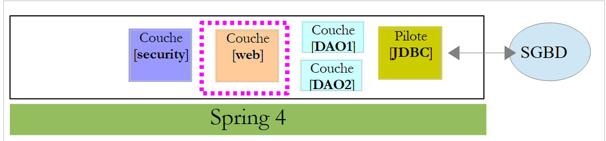 |
Das Projekt [spring-security-server-jdbc-generic] hängt vom Projekt [spring-webjson-server-jdbc-generic] ab:
|
Dieses Projekt implementiert die [Web]-Schicht. Es muss nicht geändert werden.
20.2.4. Sicherheitskonfiguration des Projekts
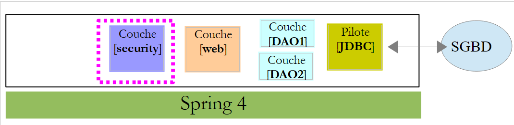 |
Das Projekt wird durch die folgende [AppConfig]-Klasse konfiguriert:
1 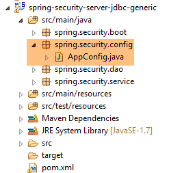 |
Wir sind bereits auf eine Spring Security-Konfigurationsklasse gestoßen (siehe Abschnitt 19.2.4):
package hello;
import org.springframework.context.annotation.Configuration;
import org.springframework.security.config.annotation.authentication.builders.AuthenticationManagerBuilder;
import org.springframework.security.config.annotation.web.builders.HttpSecurity;
import org.springframework.security.config.annotation.web.configuration.WebSecurityConfigurerAdapter;
import org.springframework.security.config.annotation.web.servlet.configuration.EnableWebMvcSecurity;
@Configuration
@EnableWebMvcSecurity
public class WebSecurityConfig extends WebSecurityConfigurerAdapter {
@Override
protected void configure(HttpSecurity http) throws Exception {
http.authorizeRequests().antMatchers("/", "/home").permitAll().anyRequest().authenticated();
http.formLogin().loginPage("/login").permitAll().and().logout().permitAll();
}
@Override
protected void configure(AuthenticationManagerBuilder auth) throws Exception {
auth.inMemoryAuthentication().withUser("user").password("password").roles("USER");
}
}
Wir gehen genauso vor:
- Zeile 11: Definieren Sie eine Klasse, die die Klasse [WebSecurityConfigurerAdapter] erweitert;
- Zeile 13: Definieren Sie eine Methode [configure(HttpSecurity http)], die Zugriffsrechte für die verschiedenen URLs des Webdienstes festlegt;
- Zeile 19: Definieren Sie eine Methode [configure(AuthenticationManagerBuilder auth)], die Benutzer und deren Rollen definiert;
Die Klasse [AppConfig] sieht wie folgt aus:
package spring.security.config;
import org.springframework.beans.factory.annotation.Autowired;
import org.springframework.context.annotation.ComponentScan;
import org.springframework.context.annotation.Configuration;
import org.springframework.context.annotation.Import;
import org.springframework.http.HttpMethod;
import org.springframework.security.config.annotation.authentication.builders.AuthenticationManagerBuilder;
import org.springframework.security.config.annotation.web.builders.HttpSecurity;
import org.springframework.security.config.annotation.web.configuration.EnableWebSecurity;
import org.springframework.security.config.annotation.web.configuration.WebSecurityConfigurerAdapter;
import org.springframework.security.crypto.bcrypt.BCryptPasswordEncoder;
import spring.security.dao.AppUserDetailsService;
import spring.webjson.server.config.WebConfig;
@Configuration
@EnableWebSecurity
@ComponentScan(basePackages = { "spring.security.dao", "spring.security.service" })
@Import({ spring.webjson.server.config.AppConfig.class, WebConfig.class })
public class AppConfig extends WebSecurityConfigurerAdapter {
@Autowired
private AppUserDetailsService appUserDetailsService;
// security
private boolean activateSecurity = true;
@Override
protected void configure(AuthenticationManagerBuilder registry) throws Exception {
// authentication is performed by bean [appUserDetailsService]
// the password is encrypted using the BCrypt hash algorithm
registry.userDetailsService(appUserDetailsService).passwordEncoder(new BCryptPasswordEncoder());
}
@Override
protected void configure(HttpSecurity http) throws Exception {
// CSRF
http.csrf().disable();
// secure application?
if (activateSecurity) {
// the password is transmitted by the header Authorization: Basic xxxx
http.httpBasic();
// the HTTP OPTIONS method must be authorized for all
http.authorizeRequests() //
.antMatchers(HttpMethod.OPTIONS, "/", "/**").permitAll();
// only the ADMIN role can use the application
http.authorizeRequests() //
.antMatchers("/", "/**") // all URL
.hasRole("ADMIN");
// session or not?
//http.sessionManagement().sessionCreationPolicy(SessionCreationPolicy.STATELESS);
}
}
}
- Zeile 17: Die Klasse ist eine Spring-Konfigurationsklasse;
- Zeile 18: Aktiviert Spring-Security-Komponenten;
- Zeile 26: Wir holen die Spring-Komponenten aus der [DAO2]-Schicht und aus dem Paket [spring.security.service] ab, auf das wir später noch eingehen werden;
- Zeile 23: Importiert die Beans aus dem Projekt [spring-webjson-server-jdbc-generic], das die [web]-Schicht implementiert. Zu diesen Beans gehören auch diejenigen aus der [DAO1]-Schicht;
- Zeilen 22–23: Die Klasse [AppUserDetails], die Zugriff auf die Benutzer der Anwendung bietet, wird injiziert;
- Zeile 26: Ein boolescher Wert, der die Webanwendung absichert (true) oder nicht absichert (false);
- Zeilen 28–33: Die Methode [configure(HttpSecurity http)] definiert Benutzer und deren Rollen. Sie nimmt einen [AuthenticationManagerBuilder] als Parameter entgegen. Dieser Parameter wird um zwei Informationen ergänzt (Zeile 32):
- einen Verweis auf den [appUserDetailsService] aus Zeile 23, der Zugriff auf registrierte Benutzer gewährt. Beachten Sie hierbei, dass nicht ausdrücklich angegeben wird, dass diese in einer Datenbank gespeichert sind. Sie könnten daher in einem Cache liegen, von einem Webdienst bereitgestellt werden usw.
- den für das Passwort verwendeten Verschlüsselungstyp. Wir haben den BCrypt-Algorithmus verwendet;
- Zeilen 35–53: Die Methode [configure(HttpSecurity http)] definiert Zugriffsrechte für die URLs des Webdienstes;
- Zeile 38: Wir haben im Einführungsprojekt gesehen, dass Spring Security standardmäßig ein CSRF-Token (Cross-Site Request Forgery) verwaltet, das der Benutzer, der sich authentifizieren möchte, an den Server zurücksenden muss. Hier ist dieser Mechanismus deaktiviert. In Kombination mit dem booleschen Wert (isSecured=false) ermöglicht dies die Nutzung der Webanwendung ohne Sicherheitsmaßnahmen;
- Zeile 42: Wir aktivieren die Authentifizierung über HTTP-Header. Der Client muss den folgenden HTTP-Header senden:
wobei code die Base64-Kodierung der Zeichenfolge login:password ist. Beispielsweise lautet die Base64-Kodierung der Zeichenfolge admin:admin YWRtaW46YWRtaW4=. Daher sendet ein Benutzer mit dem Login [admin] und dem Passwort [admin] zur Authentifizierung den folgenden HTTP-Header:
- Zeilen 47–49: geben an, dass alle URLs des Webdienstes für Benutzer mit der Rolle [ROLE_ADMIN] zugänglich sind. Das bedeutet, dass ein Benutzer ohne diese Rolle nicht auf den Webdienst zugreifen kann;
- Zeile 51: Im [session]-Modus muss sich ein Benutzer, der sich einmal authentifiziert hat, bei nachfolgenden Zugriffen nicht erneut authentifizieren. Dies ist die Standardeinstellung für Spring Security. Zeile 51 deaktiviert diesen Modus. Ist er aktiviert, muss sich der Benutzer bei jedem Zugriff authentifizieren. Ohne eine Sitzung reagiert der sichere Webdienst weniger schnell als mit einer Sitzung, daher wurde Zeile 51 auskommentiert;
20.2.5. Testen des sicheren Webdienstes
Wir werden den Webdienst mit dem Chrome-Client [Advanced Rest Client] testen. Dazu müssen wir den HTTP-Authentifizierungsheader angeben:
wobei [code] die Base64-kodierte Zeichenfolge [login:password] ist. Um diesen Code zu generieren, können Sie das folgende Programm aus dem Projekt [spring-security-create-users] verwenden:
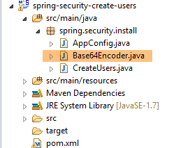 |
package spring.security.helpers;
import org.springframework.security.crypto.codec.Base64;
public class Base64Encoder {
public static void main(String[] args) {
// we expect two arguments: login password
if (args.length != 2) {
System.out.println("Syntaxe : login password");
System.exit(0);
}
// we retrieve the two arguments
String chaîne = String.format("%s:%s", args[0], args[1]);
// encode the string
byte[] data = Base64.encode(chaîne.getBytes());
// displays its Base64 encoding
System.out.println(new String(data));
}
}
Wenn wir dieses Programm mit den beiden Argumenten [admin admin] ausführen:
 |
erhalten wir folgendes Ergebnis:
Wir sind nun bereit für den Test:
- Das MySQL-DBMS muss laufen;
- wir füllen die Tabellen [PRODUCTS] und [CATEGORIES] mithilfe der Ausführungskonfiguration namens [spring-jdbc-generic-04-fillDataBase]:
 |
- Falls dies noch nicht geschehen ist, füllen wir die Tabellen [USERS, ROLES, USERS_ROLES] mithilfe der Ausführungskonfiguration namens [spring-security-create-users-hibernate-eclipselink]:
 |
- Wir starten den sicheren Webdienst mit der Laufzeitkonfiguration namens [spring-security-server-jdbc-generic]:
 |
Anschließend fordern wir mit dem Chrome-Client [Advanced Rest Client] die Langfassung aller Kategorien an:
 |
- In [1] fordern wir die URL für die ausführlichen Kategoriebeschreibungen an;
- in [2] verwenden wir dazu die GET-Methode;
- in [3] stellen wir den HTTP-Header für die Authentifizierung bereit. Der Code [YWRtaW46YWRtaW4=] ist die Base64-Kodierung der Zeichenfolge [admin:admin];
- in [4] senden wir die HTTP-Anfrage;
Die Antwort des Servers lautet wie folgt:
 |
- in [1] der HTTP-Authentifizierungsheader;
- in [2] gibt der Server eine JSON-Antwort zurück;
Wir erhalten erfolgreich die Liste der Kategorien:
 |
Versuchen wir nun eine HTTP-Anfrage mit einem falschen Authentifizierungsheader. Die Antwort lautet dann wie folgt:
 |
- in [1]: der HTTP-Authentifizierungsheader;
Wir erhalten die folgende Antwort:
 |
- in [2]: die Antwort des Webdienstes;
Probieren wir nun den Benutzer / user aus. Er existiert, hat aber keinen Zugriff auf den Webdienst. Wenn wir das Base64-Kodierungsprogramm mit den beiden Argumenten [user user] ausführen:
 |
erhalten wir folgendes Ergebnis:
 |
- in [1]: der falsche HTTP-Authentifizierungsheader;
 |
- in [2]: die Antwort des Webdienstes. Sie unterscheidet sich von der vorherigen, die [401 Unauthorized] lautete. Diesmal hat sich der Benutzer korrekt authentifiziert, verfügt jedoch nicht über ausreichende Berechtigungen, um auf die URL zuzugreifen;
Ein sicherer Webdienst ist nun betriebsbereit.
20.2.6. Eine Authentifizierungs-URL
 |
Wir erstellen eine URL, mit der wir feststellen können, ob ein Benutzer zum Zugriff auf den Webdienst berechtigt ist. Dazu erstellen wir den folgenden neuen MVC-Controller [AuthenticateController]:
package spring.security.service;
import org.springframework.web.bind.annotation.RequestMapping;
import org.springframework.web.bind.annotation.RequestMethod;
import org.springframework.web.bind.annotation.RestController;
import spring.webjson.server.service.Response;
@RestController
public class AuthenticateController {
@RequestMapping(value = "/authenticate", method = RequestMethod.GET)
public Response<Void> authenticate() {
return new Response<Void>(0, null, null);
}
}
- Zeile 9: Die Klasse [AuthenticateController] ist ein Spring-Controller. Als solcher stellt er URLs bereit. Die Annotation [@RestController] gibt an, dass die Methoden, die diese URLs verarbeiten, ihre eigenen Antworten an den Client zurückgeben;
- Zeile 11: stellt die URL [/authenticate] bereit;
- Zeilen 12–14: Die Methode gibt lediglich ein leeres [Response]-Objekt zurück, jedoch mit einem [status] von 0, was anzeigt, dass kein Fehler aufgetreten ist;
Wozu dient diese URL? Wenn wir lediglich einen Benutzer authentifizieren möchten, rufen wir sie auf. Wir haben gesehen, dass die Sicherheitsschicht eine Ausnahme auslöst, wenn sie diesen Benutzer nicht akzeptiert. Hier ist ein Beispiel;
Mit dem Benutzer [admin:admin]:
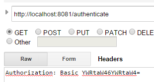 |  |
Wir erhalten eine leere Antwort, aber keine Ausnahme.
Mit dem Benutzer [user:user]:
 |  |
Es ist eine Ausnahme aufgetreten.
20.2.7. Fazit
Die für Spring Security erforderlichen Klassen wurden hinzugefügt, ohne das ursprüngliche Web/JSON-Projekt zu verändern. Dieses ideale Szenario ergibt sich daraus, dass die drei zur Datenbank hinzugefügten Tabellen unabhängig von den bestehenden Tabellen sind. Wir hätten sie sogar in einer separaten Datenbank unterbringen können. In anderen Fällen können die hinzugefügten Tabellen Beziehungen zu bestehenden Tabellen aufweisen. Der Code in der bestehenden [DAO]-Schicht muss dann überprüft werden.
20.3. Ein für den sicheren Web-/JSON-Dienst programmierter Client
Wir haben bereits einen Client für den ungesicherten Webdienst / JSON geschrieben:
 |
Wir werden nun einen Client erstellen, der für den sicheren Webdienst programmiert ist:
 |
 |
20.3.1. Die [HTTP-Client]-Schicht
 |
 |  |
Die Klasse [Client] übernimmt die HTTP-Kommunikation mit dem sicheren / JSON-Webserver. Wie wir gerade gesehen haben, muss der Client bei dieser HTTP-Kommunikation nun einen Authentifizierungsheader senden, zum Beispiel:
Die [IClient]-Schnittstelle sieht nun wie folgt aus:
package spring.webjson.client.dao;
import org.springframework.http.HttpMethod;
import spring.webjson.client.entities.Credentials;
public interface IClient {
public <T1, T2> T1 getResponse(Credentials credentials,String url, HttpMethod method, int errStatus, T2 body);
}
- Zeile 8: Der erste Parameter der Methode [getResponse] ist nun ein [Credentials]-Objekt, das die Anmeldedaten eines Benutzers kapselt:
package spring.security.client.entities;
public class Credentials {
// properties
private String login;
private String password;
// manufacturer
public Credentials() {
}
public Credentials(String login, String password) {
this.login = login;
this.password = password;
}
// getters and setters
...
}
Die Klasse [Client], die die Schnittstelle [IClient] implementiert, entwickelt sich wie folgt:
package spring.security.client.dao;
...
@Component
public class Client implements IClient {
// injections
@Autowired
protected RestTemplate restTemplate;
@Autowired
protected String urlServiceWebJson;
// local
private String simpleClassName = getClass().getSimpleName();
private String getBase64(Credentials credentials) {
// encodes user and password in base 64 - requires java 8
String chaîne = String.format("%s:%s", credentials.getLogin(), credentials.getPassword());
return String.format("Basic %s", new String(Base64.getEncoder().encode(chaîne.getBytes())));
}
// generic request
@Override
public <T1, T2> T1 getResponse(Credentials credentials, String url, HttpMethod method, int errStatus, T2 body) {
// the server response
ResponseEntity<Response<T1>> response;
try {
// prepare the query
RequestEntity<?> request = null;
if (method == HttpMethod.GET) {
HeadersBuilder<?> headersBuilder = RequestEntity.get(new URI(String.format("%s%s", urlServiceWebJson, url))) .accept(MediaType.APPLICATION_JSON);
if (credentials != null) {
headersBuilder = headersBuilder.header("Authorization", getBase64(credentials));
}
request = headersBuilder.build();
}
if (method == HttpMethod.POST) {
BodyBuilder bodyBuilder = RequestEntity.post(new URI(String.format("%s%s", urlServiceWebJson, url))).header("Content-Type", "application/json").accept(MediaType.APPLICATION_JSON);
if (credentials != null) {
bodyBuilder = bodyBuilder.header("Authorization", getBase64(credentials));
}
request = bodyBuilder.body(body);
}
// execute the query
response = restTemplate.exchange(request, new ParameterizedTypeReference<Response<T1>>() {
});
} catch (Exception e) {
// encapsulate the exception
throw new DaoException(errStatus, e, simpleClassName);
}
...
}
...
}
- Zeilen 33–35, 40–42: Wenn die Benutzerdaten [credentials] nicht null sind, wird der Authentifizierungsheader hinzugefügt. Die Base64-Kodierung von Benutzername und Passwort wird von der Methode [getBase64] in den Zeilen 17–21 übernommen. Beachten Sie, dass diese Methode eine [Base64]-Klasse aus JDK 1.8 verwendet. Unser HTTP-Client kann mit einem ungesicherten Webdienst arbeiten. Übergeben Sie ihm einfach ein [credentials] gleich null;
- Abgesehen von den vorangegangenen Zeilen bleibt der Code unverändert;
20.3.2. Die [DAO]-Schicht
 |
20.3.2.1. Die [IDao]-Schnittstelle
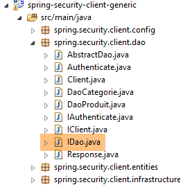 |
Alle Methoden der [IDao]-Schnittstelle im Projekt [spring-webjson-client-generic] erhalten einen zusätzlichen [Credentials]-Parameter:
package spring.security.client.dao;
import java.util.List;
import spring.security.client.entities.AbstractCoreEntity;
import spring.security.client.entities.Credentials;
public interface IDao<T extends AbstractCoreEntity> extends IAuthenticate {
// list of all T entities
public List<T> getAllShortEntities(Credentials credentials);
public List<T> getAllLongEntities(Credentials credentials);
// special entities - short version
public List<T> getShortEntitiesById(Credentials credentials, Iterable<Long> ids);
public List<T> getShortEntitiesById(Credentials credentials, Long... ids);
public List<T> getShortEntitiesByName(Credentials credentials, Iterable<String> names);
public List<T> getShortEntitiesByName(Credentials credentials, String... names);
// special entities - long version
public List<T> getLongEntitiesById(Credentials credentials, Iterable<Long> ids);
public List<T> getLongEntitiesById(Credentials credentials, Long... ids);
public List<T> getLongEntitiesByName(Credentials credentials, Iterable<String> names);
public List<T> getLongEntitiesByName(Credentials credentials, String... names);
// update of several entities
public List<T> saveEntities(Credentials credentials, Iterable<T> entities);
public List<T> saveEntities(Credentials credentials, @SuppressWarnings("unchecked") T... entities);
// delete all entities
public void deleteAllEntities(Credentials credentials);
// deletion of multiple entities
public void deleteEntitiesById(Credentials credentials, Iterable<Long> ids);
public void deleteEntitiesById(Credentials credentials, Long... ids);
public void deleteEntitiesByName(Credentials credentials, Iterable<String> names);
public void deleteEntitiesByName(Credentials credentials, String... names);
public void deleteEntitiesByEntity(Credentials credentials, Iterable<T> entities);
public void deleteEntitiesByEntity(Credentials credentials, @SuppressWarnings("unchecked") T... entities);
}
- Zeile 8: Die Schnittstelle [IDao] erweitert die folgende Schnittstelle [IAuthenticate]:
package spring.security.client.dao;
import spring.security.client.entities.Credentials;
public interface IAuthenticate {
// authentication
public void authenticate(Credentials credentials);
}
Die Schnittstelle [IAuthenticate] verfügt nur über eine einzige Methode, [authenticate]. Diese Methode gibt nichts zurück (void), wenn der Benutzer [Credentials credentials] vom sicheren Webdienst akzeptiert wird; andernfalls löst sie eine Ausnahme aus.
20.3.2.2. Die Klasse [AbstractDao]
 |
Zur Erinnerung: Die Klasse [AbstractDao] ist die Oberklasse der [DaoCategorie]-Klassen, die Kategorie-URLs verwalten, sowie der Klasse [DaoProduit], die Produkt-URLs verwaltet. Alle Methoden der Klasse [AbstractDao] im Projekt [spring-webjson-client-generic] erhalten einen zusätzlichen Parameter [Credentials credentials], den sie an die untergeordnete Klasse weitergeben. Hier ein Beispiel:
@Override
public List<T1> getShortEntitiesById(Credentials credentials, Iterable<Long> ids) {
// validité de l'argument
List<T1> entities = checkNullOrEmptyArgument(true, ids);
if (entities != null) {
return entities;
}
// résultat
return getShortEntitiesById(credentials, Lists.newArrayList(ids));
}
- Die Methode [getShortEntitiesById] empfängt den Parameter [Credentials credentials] (Zeile 2), den sie (Zeile 9) an die Methode [getShortEntitiesById] der untergeordneten Klasse weiterleitet;
Die Klasse [AbstractDao] hat das folgende Grundgerüst:
package spring.security.client.dao;
import java.util.ArrayList;
import java.util.List;
import org.springframework.beans.factory.annotation.Autowired;
import spring.security.client.entities.AbstractCoreEntity;
import spring.security.client.entities.Credentials;
import spring.security.client.infrastructure.MyIllegalArgumentException;
import com.google.common.collect.Lists;
public abstract class AbstractDao<T1 extends AbstractCoreEntity> implements IDao<T1> {
@Autowired
private IAuthenticate authenticate;
...
}
- Zeile 14: Die Klasse implementiert die von uns beschriebene [IDao]-Schnittstelle;
- Zeilen 16–17: Eine Instanz der [IAuthenticate]-Schnittstelle wird injiziert. Diese wird durch die folgende [Authenticate]-Klasse implementiert:
package spring.security.client.dao;
import org.springframework.beans.factory.annotation.Autowired;
import org.springframework.http.HttpMethod;
import org.springframework.stereotype.Component;
import spring.security.client.entities.Credentials;
@Component
public class Authenticate implements IAuthenticate{
@Autowired
protected IClient client;
// verification [credentials,mdp]
public void authenticate(Credentials credentials) {
client.<Void, Void> getResponse(credentials, "/authenticate", HttpMethod.GET, 111, (Void) null);
}
}
- Zeile 9: Die Klasse [Authenticate] ist eine Spring-Komponente;
- Zeile 10: die die Schnittstelle [IAuthenticate] implementiert;
- Zeilen 11–12: Einbindung des HTTP-Clients, der die Kommunikation mit dem sicheren Webdienst ermöglicht;
- Zeilen 15–17: Implementierung der Methode [authenticate] der Schnittstelle;
- Zeile 16: Eine HTTP-GET-Anfrage wird an die URL [/authenticate] gesendet. Die Verwendung dieser URL wurde in Abschnitt 20.2.6 demonstriert. Das Prinzip besteht darin, dass der Aufruf eine Ausnahme auslöst, wenn die [Anmeldedaten] des Benutzers entweder unbekannt sind oder ihm nicht genügend Berechtigungen vorliegen;
Die Klasse [AbstractDao] implementiert die Methode [authenticate] der Schnittstelle [IDao] wie folgt:
@Autowired
private IAuthenticate authenticate;
@Override
public void authenticate(Credentials credentials) {
authenticate.authenticate(credentials);
}
- Zeile 7: Die Aufgabe wird an die Methode [authenticate] der Klasse [Authenticate] delegiert. Es wird daher eine Ausnahme ausgelöst, wenn der Benutzer [Credentials credentials] vom sicheren Webdienst nicht akzeptiert wird;
20.3.2.3. Die Klassen [DaoCategorie, DaoProduit]
 |
Die Klassen [DaoCategorie, DaoProduit] stammen aus dem Projekt [spring-webjson-server-generic] und verfügen über den zusätzlichen Parameter [Credentials credentials]. Hier ein Beispiel:
@Component
public class DaoCategorie extends AbstractDao<Categorie> {
// injections
@Autowired
protected ApplicationContext context;
@Autowired
protected IClient client;
@Override
public List<Categorie> getAllShortEntities(Credentials credentials) {
try {
// filters jSON
ObjectMapper mapper = context.getBean("jsonMapperShortCategorie", ObjectMapper.class);
// get all categories
Object map = client.<List<Categorie>, Void> getResponse(credentials, "/getAllShortCategories", HttpMethod.GET,
202, null);
// the List<Categorie> category list
return mapper.readValue(mapper.writeValueAsString(map), new TypeReference<List<Categorie>>() {
});
} catch (DaoException e1) {
throw e1;
} catch (Exception e2) {
throw new DaoException(221, e2, simpleClassName);
}
}
....
20.3.3. Die Spring-Konfiguration
 |
Die Klasse [AppConfig] konfiguriert die Spring-Umgebung des Projekts. Sie ist identisch mit der im Projekt [spring-webjson-client-generic], mit einer Ausnahme:
@Configuration
@ComponentScan({ "spring.security.client.dao" })
public class AppConfig {
- Zeile 2: Sie müssen das Paket der neuen [DAO]-Schicht angeben;
20.3.4. Tests für die [DAO]-Schicht
 |
 |
20.3.4.1. Der [JUnitTestCredentials]-Test
Der [JUnitTestCredentials]-Test verwendet die Methode [IDao.authenticate], um die Gültigkeit bestimmter Benutzer zu überprüfen:
package client.tests.junit;
import org.junit.Assert;
import org.junit.BeforeClass;
import org.junit.Test;
import org.junit.runner.RunWith;
import org.springframework.beans.factory.annotation.Autowired;
import org.springframework.boot.test.SpringApplicationConfiguration;
import org.springframework.test.context.junit4.SpringJUnit4ClassRunner;
import spring.security.client.config.AppConfig;
import spring.security.client.dao.IAuthenticate;
import spring.security.client.entities.Credentials;
import spring.security.client.infrastructure.DaoException;
@SpringApplicationConfiguration(classes = AppConfig.class)
@RunWith(SpringJUnit4ClassRunner.class)
public class JUnitTestCredentials {
// layer [DAO]
@Autowired
private IAuthenticate authenticate;
// users
static private Credentials admin;
static private Credentials user;
static private Credentials unknown;
@BeforeClass
public static void init() {
admin = new Credentials("admin", "admin");
user = new Credentials("user", "user");
unknown = new Credentials("x", "y");
}
@Test()
public void checkUserUser() {
DaoException se = null;
try {
authenticate.authenticate(user);
} catch (DaoException e) {
se = e;
System.out.println("checkUserUser: " + e);
}
Assert.assertNotNull(se);
Assert.assertEquals("403 Forbidden", se.getExceptions().get(0).getErrorMessage());
}
@Test()
public void checkUserUnknown() {
DaoException se = null;
try {
authenticate.authenticate(unknown);
} catch (DaoException e) {
se = e;
System.out.println("checkUserUnknown : " + e);
}
Assert.assertNotNull(se);
Assert.assertEquals("401 Unauthorized", se.getExceptions().get(0).getErrorMessage());
}
@Test()
public void checkUserAdmin() {
DaoException se = null;
try {
authenticate.authenticate(admin);
} catch (DaoException e) {
se = e;
System.out.println("checkUserAdmin : " + e);
}
Assert.assertNull(se);
}
}
- Bei der Initialisierung der Testklasse (Zeilen 29–34) werden drei Benutzer angelegt:
- Der Benutzer [admin] hat Zugriff auf die Webservice-URLs. Dies wird in den Zeilen 63–72 getestet;
- der Benutzer [user] existiert, ist jedoch nicht zur Nutzung der Webservice-URLs berechtigt. Dies wird in den Zeilen 37–47 getestet;
- Der Benutzer [unknown] existiert nicht. Dies wird in den Zeilen 50–60 getestet;
Wir starten den sicheren Webdienst mit der Laufzeitkonfiguration namens [spring-security-server-jdbc-generic] [1]:
 |
Anschließend führen wir den JUnit-Test [JUnitTestCredentials] mit der Laufzeitkonfiguration [spring-security-client-generic-JUnitTestCredentials] [2] aus. Die erhaltenen Konsolenergebnisse lauten wie folgt:
und der Test wird bestanden:
 |
20.3.4.2. Der [JUnitTestDao]-Test
Der [JUnitTestDao]-Test ist identisch mit dem im ungesicherten [spring-webjson-client-generic]-Projekt, mit dem Unterschied, dass nun die Methoden der zu testenden [DAO]-Schicht alle den Benutzer [admin / admin] als ersten Parameter haben:
@SpringApplicationConfiguration(classes = AppConfig.class)
@RunWith(SpringJUnit4ClassRunner.class)
public class JUnitTestDao {
// spring context
@Autowired
private ApplicationContext context;
// layer [DAO]
@Autowired
private IDao<Produit> daoProduit;
@Autowired
private IDao<Categorie> daoCategorie;
....
// users
static private Credentials admin;
@BeforeClass
public static void init() {
admin = new Credentials("admin", "admin");
}
@Before
public void clean() {
// the base is cleaned before each test
log("Vidage de la base de données", 1);
// we empty table [CATEGORIES] and cascade table [PRODUITS]
daoCategorie.deleteAllEntities(admin);
// emptying dictionaries
for (Long id : mapCategories.keySet()) {
mapCategories.remove(id);
}
for (Long id : mapProduits.keySet()) {
mapProduits.remove(id);
}
}
private List<Categorie> fill(int nbCategories, int nbProduits) {
// fill the tables
...
// adding the category - by cascading the products will also be
// inserted - the result is returned at the same time
return daoCategorie.saveEntities(admin, categories);
}
private Object[] showDataBase() throws BeansException, JsonProcessingException {
// list of categories
log("Liste des catégories", 2);
List<Categorie> categories = daoCategorie.getAllShortEntities(admin);
affiche(categories, context.getBean("jsonMapperShortCategorie", ObjectMapper.class));
// product list
log("Liste des produits", 2);
List<Produit> produits = daoProduit.getAllShortEntities(admin);
affiche(produits, context.getBean("jsonMapperShortProduit", ObjectMapper.class));
// result
return new Object[] { categories, produits };
}
...
Alle Vorgänge werden unter dem Benutzer [admin / admin] ausgeführt, der als Einziger über Zugriffsrechte auf den gesicherten Webdienst verfügt.
Wir führen den Test mit der Ausführungskonfiguration [spring-security-client-generic-JUnitTestDao] durch:
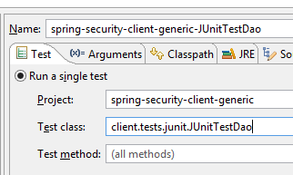 |
Der Test ist erfolgreich, aber wir sehen, dass er langsamer ist als bei dem ungesicherten Webdienst. Die Absicherung einer Anwendung erhöht deren Antwortzeiten erheblich. Es gibt einen wichtigen Faktor, der die Leistung des gesicherten Webdienstes beeinflusst: In der Klasse [AppConfig], die ihn konfiguriert, haben wir geschrieben:
@Override
protected void configure(HttpSecurity http) throws Exception {
// CSRF
http.csrf().disable();
// secure application?
if (activateSecurity) {
// the password is transmitted by the header Authorization: Basic xxxx
http.httpBasic();
// the HTTP OPTIONS method must be authorized for all
http.authorizeRequests() //
.antMatchers(HttpMethod.OPTIONS, "/", "/**").permitAll();
// only the ADMIN role can use the application
http.authorizeRequests() //
.antMatchers("/", "/**") // all URL
.hasRole("ADMIN");
// no session
http.sessionManagement().sessionCreationPolicy(SessionCreationPolicy.STATELESS);
}
}
Zeile 17 hat Auswirkungen. Sie legt fest, ob der Benutzer bei jedem Zugriff zur Authentifizierung gezwungen wird oder nicht. Wenn wir sie auskommentieren, verkürzt sich die Dauer des JUnit-Tests erheblich, da sich der Benutzer [admin] nur beim ersten Test unter authentifiziert und nicht bei den nachfolgenden (selbst wenn der HTTP-Authentifizierungsheader vom Client gesendet wird, überprüft der Server das Passwort des Benutzers nicht erneut).
20.4. Das Eclipse-Projekt [spring-security-server-jpa-generic]
Der sichere Webdienst wird nun durch das Projekt [spring-security-server-jpa-generic] implementiert, das auf dem Projekt [spring-jpa-generic] basiert, welches den Datenbankzugriff mithilfe von Spring Data JPA verwaltet:
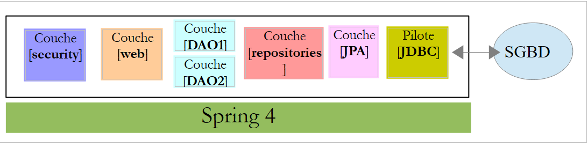 |
Oben:
- Die [DAO1]-Schicht ist die [DAO]-Schicht, die die Tabellen [PRODUCTS] und [CATEGORIES] in der Datenbank [dbproduitscategories] verwaltet. Sie ist bereits geschrieben;
- die [DAO2]-Schicht ist die [DAO]-Schicht, die die Tabellen [USERS], [ROLES] und [USERS_ROLES] in der Datenbank [dbproduitscategories] verwaltet. Sie muss noch geschrieben werden;
Das Projekt [spring-security-server-jpa-generic] wird zunächst durch Klonen des zuvor behandelten Projekts [spring-security-server-jdbc-generic] erstellt. Tatsächlich bleiben die Schichten [web] und [security] unverändert, da:
- die [DAO1 / Repositories / JPA]-Schicht (bereits geschrieben) dieselbe Schnittstelle wie die [DAO1 / JDBC]-Schicht hat;
- die [DAO2 / Repositories / JPA]-Schicht (noch zu schreiben) dieselbe Schnittstelle wie die [DAO2 / JDBC]-Schicht haben wird;
Das Projekt [spring-security-server-jpa-generic] sieht wie folgt aus:
 |
- Das Paket [spring.security.repositories] implementiert die [repositories]-Schicht;
- das Paket [spring.security.dao] implementiert die [dao2]-Schicht;
20.4.1. Das Maven-Projekt
Das Projekt ist ein Maven-Projekt, das durch die folgende [pom.xml]-Datei konfiguriert wird:
<project xmlns="http://maven.apache.org/POM/4.0.0" xmlns:xsi="http://www.w3.org/2001/XMLSchema-instance"
xsi:schemaLocation="http://maven.apache.org/POM/4.0.0 http://maven.apache.org/xsd/maven-4.0.0.xsd">
<modelVersion>4.0.0</modelVersion>
<groupId>dvp.spring.database</groupId>
<artifactId>spring-security-server-jpa-generic</artifactId>
<version>0.0.1-SNAPSHOT</version>
<name>spring-security-server-jpa-generic</name>
<description>démo spring security</description>
<properties>
<project.build.sourceEncoding>UTF-8</project.build.sourceEncoding>
<java.version>1.7</java.version>
</properties>
<parent>
<groupId>org.springframework.boot</groupId>
<artifactId>spring-boot-starter-parent</artifactId>
<version>1.2.3.RELEASE</version>
</parent>
<dependencies>
<!-- Spring security -->
<dependency>
<groupId>org.springframework.boot</groupId>
<artifactId>spring-boot-starter-security</artifactId>
</dependency>
<!-- web server / jSON -->
<dependency>
<groupId>dvp.spring.database</groupId>
<artifactId>spring-webjson-server-jpa-generic</artifactId>
<version>0.0.1-SNAPSHOT</version>
</dependency>
</dependencies>
<!-- plugins -->
<build>
<plugins>
<plugin>
<groupId>org.apache.maven.plugins</groupId>
<artifactId>maven-surefire-plugin</artifactId>
<version>2.18.1</version>
</plugin>
</plugins>
</build>
</project>
- Zeilen 24–27: die Abhängigkeit für die [security]-Schicht des Projekts;
- Zeilen 29–33: die Abhängigkeit für die [Web]-Schicht des Projekts. Das Projekt [spring-webjson-server-jpa-generic] implementiert die [Web]-Schicht vollständig. Diese Schicht muss weder geschrieben noch geändert werden;
Letztendlich lauten die Abhängigkeiten wie folgt:
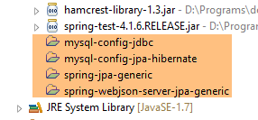 |
20.4.2. Die Spring-Konfiguration
 |
Die Konfigurationsdatei [AppConfig] aus dem vorherigen Projekt [spring-security-server-jdbc-generic] ist geeignet. Sie müssen lediglich eine zusätzliche Konfiguration hinzufügen:
@Configuration
@EnableWebSecurity
@EnableJpaRepositories(basePackages = { "spring.security.repositories" })
@ComponentScan(basePackages = { "spring.security.dao", "spring.security.service" })
@Import({ spring.webjson.server.config.AppConfig.class })
public class AppConfig extends WebSecurityConfigurerAdapter {
- Zeile 3: Wir deklarieren das Paket, das die [Repositories]-Schicht implementiert;
- Zeile 4: Die Pakete, die die Spring-Beans enthalten, haben im neuen Projekt denselben Namen;
- Zeile 5: Im vorherigen Projekt befand sich die Klasse [spring.webjson.server.config.AppConfig] in der Abhängigkeit [spring-webjson-server-jdbc-generic]. Hier befindet sie sich in der Abhängigkeit [spring-webjson-server-jpa-generic];
20.4.3. Die JPA-Schicht
 |
Die von der [JPA]-Schicht verwalteten JPA-Entitäten befinden sich im Projekt [mysql-config-jpa-hibernate] [2], das eine Abhängigkeit des Projekts [1] darstellt:
 |
Die Klasse [User] ist die Zuordnung zur Tabelle [USERS]:

- ID: Primärschlüssel;
- VERSION: Spalte für die Zeilenversionierung;
- IDENTITY: eine beschreibende Kennung für den Benutzer;
- LOGIN: der Benutzername des Benutzers;
- PASSWORD: das Passwort des Benutzers;
package generic.jpa.entities.dbproduitscategories;
import generic.jdbc.config.ConfigJdbc;
import java.util.List;
import javax.persistence.CascadeType;
import javax.persistence.Column;
import javax.persistence.Entity;
import javax.persistence.FetchType;
import javax.persistence.GeneratedValue;
import javax.persistence.GenerationType;
import javax.persistence.Id;
import javax.persistence.OneToMany;
import javax.persistence.Table;
import javax.persistence.Transient;
import javax.persistence.Version;
import com.fasterxml.jackson.annotation.JsonIgnore;
@Entity
@Table(name = ConfigJdbc.TAB_USERS)
public class User implements AbstractCoreEntity {
// properties
@Id
@GeneratedValue(strategy = GenerationType.IDENTITY)
@Column(name = ConfigJdbc.TAB_JPA_ID)
protected Long id;
@Version
@Column(name = ConfigJdbc.TAB_JPA_VERSIONING)
protected Long version;
@Transient
protected EntityType entityType=EntityType.POJO;
// properties
@Column(name = ConfigJdbc.TAB_USERS_NAME, length = 30, nullable = false)
private String name;
@Column(name = ConfigJdbc.TAB_USERS_LOGIN, length = 30, unique = true, nullable = false)
private String login;
@Column(name = ConfigJdbc.TAB_USERS_PASSWORD, length = 60, nullable = false)
private String password;
// the associated UserRole
@OneToMany(fetch = FetchType.LAZY, mappedBy = "user", cascade = { CascadeType.ALL })
@JsonIgnore
private List<UserRole> userRoles;
// manufacturers
public User() {
}
public User(Long id, Long version, String identity, String login, String password) {
this.id = id;
this.version = version;
this.name = identity;
this.login = login;
this.password = password;
}
// ------------------------------------------------------------
// redefine [equals] and [hashcode]
...
// getters and setters
...
}
- Zeile 23: Die Klasse implementiert die Schnittstelle [AbstractCoreEntity], die bereits für die anderen Entitäten verwendet wird;
- Zeilen 34–35: der Entitätstyp. Diese Eigenschaft wird nicht in der Datenbank gespeichert [@Transient];
- Zeilen 38–43: die drei grundlegenden Eigenschaften eines Benutzers (Name, Login, Passwort);
- Zeilen 46–48: die Liste der Rollen des Benutzers. Ein Benutzer kann mehrere Rollen haben. Ebenso werden wir sehen, dass eine Rolle mehreren Benutzern zugeordnet werden kann. Somit besteht im Sinne von JPA eine [ManyToMany]-Beziehung zwischen den Entitäten [User] und [Role]:
- Ein Benutzer kann mehreren Rollen zugewiesen werden;
- Eine Rolle kann mehreren Benutzern zugeordnet sein;
Diese [ManyToMany]-Beziehung wird in der Datenbank durch die Verknüpfungstabelle [USERS_ROLES] umgesetzt. Wenn ein Benutzer U eine Beziehung zu einer Rolle R hat, wird diese Beziehung in der Tabelle [USERS_ROLES] gespeichert, indem das Primärschlüsselpaar der Entitäten (U, R) erfasst wird. Auf der JPA-Seite kann die [ManyToMany]-Beziehung, die die Entitäten [User] und [Role] verbindet, in zwei Beziehungen [ManyToOne, OneToMany] aufgeteilt werden:
- (Fortsetzung)
- eine [ManyToOne]-Beziehung von der Entität [User] zur Entität [UserRole];
- eine [OneToMany]-Beziehung von der Entität [UserRole] zur Entität [UserRole];
Ebenso lässt sich die [ManyToMany]-Beziehung zwischen den Entitäten [Role] und [User] in zwei [ManyToOne, OneToMany]-Beziehungen aufteilen:
- (Fortsetzung)
- eine [ManyToOne]-Beziehung von der Entität [Role] zur Entität [UserRole];
- eine [OneToMany]-Beziehung von der Entität [UserRole] zur Entität [User];
- Zeile 48: Die Tatsache, dass ein Benutzer mehrere Rollen hat, wird durch eine [OneToMany]-Beziehung zur Entität [UserRole] dargestellt;
Die Klasse [Role] repräsentiert die Tabelle [ROLES]:

- ID: Primärschlüssel;
- VERSION: Spalte für die Zeilenversionierung;
- NAME: Rollenname. Standardmäßig erwartet Spring Security Namen im Format ROLE_XX, zum Beispiel ROLE_ADMIN oder ROLE_GUEST;
package generic.jpa.entities.dbproduitscategories;
import generic.jdbc.config.ConfigJdbc;
import java.util.List;
import javax.persistence.CascadeType;
import javax.persistence.Column;
import javax.persistence.Entity;
import javax.persistence.FetchType;
import javax.persistence.GeneratedValue;
import javax.persistence.GenerationType;
import javax.persistence.Id;
import javax.persistence.OneToMany;
import javax.persistence.Table;
import javax.persistence.Transient;
import javax.persistence.Version;
import com.fasterxml.jackson.annotation.JsonIgnore;
@Entity
@Table(name = ConfigJdbc.TAB_ROLES)
public class Role implements AbstractCoreEntity {
// properties
@Id
@GeneratedValue(strategy = GenerationType.IDENTITY)
@Column(name = ConfigJdbc.TAB_JPA_ID)
protected Long id;
@Version
@Column(name = ConfigJdbc.TAB_JPA_VERSIONING)
protected Long version;
@Transient
protected EntityType entityType=EntityType.POJO;
// properties
@Column(name = ConfigJdbc.TAB_ROLES_NAME, length = 30, unique = true, nullable = false)
private String name;
// the associated UserRole
@OneToMany(fetch = FetchType.LAZY, mappedBy = "role", cascade = { CascadeType.ALL })
@JsonIgnore
private List<UserRole> userRoles;
// manufacturers
public Role() {
}
public Role(Long id, Long version, String name) {
this.id = id;
this.version = version;
this.name = name;
}
// getters and setters
public Role(String name) {
this.name = name;
}
// ------------------------------------------------------------
// redefine [equals] and [hashcode]
...
// getters and setters
...
}
- Zeilen 42–44: Die Tatsache, dass einer Rolle mehrere Benutzer zugeordnet werden können, wird durch eine [@OneToMany]-Beziehung zur Entität [UserRole] dargestellt;
Die Klasse [UserRole] repräsentiert die Tabelle [USERS_ROLES]:

Ein Benutzer kann mehrere Rollen haben, und eine Rolle kann mehrere Benutzer haben. Wir haben eine Viele-zu-Viele-Beziehung, die durch die Tabelle [USERS_ROLES] dargestellt wird.
- ID: Primärschlüssel;
- VERSION: Spalte für die Zeilenversionierung;
- USER_ID: Benutzer-ID;
- ROLE_ID: Kennung einer Rolle;
package generic.jpa.entities.dbproduitscategories;
import generic.jdbc.config.ConfigJdbc;
import javax.persistence.Column;
import javax.persistence.Entity;
import javax.persistence.FetchType;
import javax.persistence.GeneratedValue;
import javax.persistence.GenerationType;
import javax.persistence.Id;
import javax.persistence.JoinColumn;
import javax.persistence.ManyToOne;
import javax.persistence.Table;
import javax.persistence.Transient;
import javax.persistence.Version;
@Entity
@Table(name = ConfigJdbc.TAB_USERS_ROLES)
public class UserRole implements AbstractCoreEntity {
// properties
@Id
@GeneratedValue(strategy = GenerationType.IDENTITY)
@Column(name = ConfigJdbc.TAB_JPA_ID)
protected Long id;
@Version
@Column(name = ConfigJdbc.TAB_JPA_VERSIONING)
protected Long version;
@Transient
protected EntityType entityType=EntityType.POJO;
// a UserRole refers to a User
@ManyToOne(fetch = FetchType.LAZY)
@JoinColumn(name = ConfigJdbc.TAB_USERS_ROLES_USER_ID, nullable = false)
private User user;
// a UserRole refers to a Role
@ManyToOne(fetch = FetchType.LAZY)
@JoinColumn(name = ConfigJdbc.TAB_USERS_ROLES_ROLE_ID, nullable = false)
private Role role;
// manufacturers
public UserRole() {
}
public UserRole(User user, Role role) {
this.user = user;
this.role = role;
}
// ------------------------------------------------------------
// redefine [equals] and [hashcode]
...
// getters and setters
...
}
- Zeilen 34–36: Implementieren Sie den Fremdschlüssel von der Tabelle [USERS_ROLES] zur Tabelle [USERS];
- Zeilen 38–41: Implementieren Sie den Fremdschlüssel von der Tabelle [USERS_ROLES] zur Tabelle [ROLES];
20.4.4. Die [repositories]-Ebene
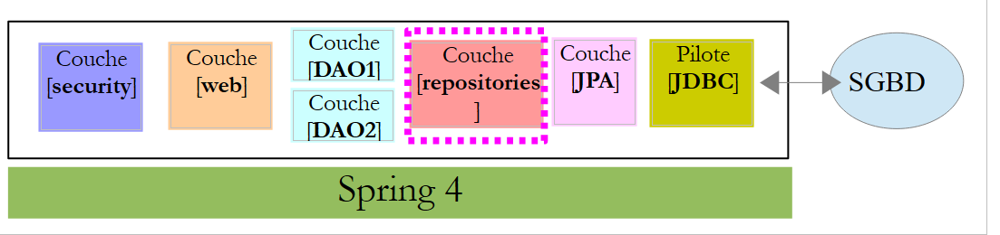 |
 |
Die Schnittstelle [UserRepository] verwaltet den Zugriff auf [User]-Entitäten:
package spring.security.repositories;
import generic.jpa.entities.dbproduitscategories.Role;
import generic.jpa.entities.dbproduitscategories.User;
import org.springframework.data.jpa.repository.Query;
import org.springframework.data.repository.CrudRepository;
public interface UserRepository extends CrudRepository<User, Long> {
// liste des rôles d'un utilisateur identifié par son id
@Query("select ur.role from UserRole ur where ur.user.id=?1")
Iterable<Role> getRoles(long id);
// liste des rôles d'un utilisateur identifié par son login unique
@Query("select ur.role from UserRole ur where ur.user.login=?1 and ur.user.password=?2")
Iterable<Role> getRoles(String login, String password);
// recherche d'un utilisateur via son login
User findUserByLogin(String login);
}
- Zeile 9: Die Schnittstelle [UserRepository] erweitert die Spring Data-Schnittstelle [CrudRepository] (Zeile 7);
- Zeilen 12–13: Die Methode [getRoles(long id)] ruft alle Rollen für einen Benutzer ab, der durch seine [id] identifiziert wird
- Zeilen 16–17: wie oben, jedoch für einen Benutzer, der durch seinen Benutzernamen und sein Passwort identifiziert wird;
- Zeile 20: Um einen Benutzer anhand seines Benutzernamens zu finden;
Die Schnittstelle [RoleRepository] verwaltet den Zugriff auf [Role]-Entitäten:
package spring.security.repositories;
import generic.jpa.entities.dbproduitscategories.Role;
import org.springframework.data.repository.CrudRepository;
public interface RoleRepository extends CrudRepository<Role, Long> {
// search for a role by name
Role findRoleByName(String name);
}
- Zeile 7: Die Schnittstelle [RoleRepository] erweitert die Schnittstelle [CrudRepository];
- Zeile 10: Sie können eine Rolle anhand ihres Namens suchen. Beachten Sie, dass die Entität [Role] über ein Feld [name] verfügt. Die Methode [findEntityByField] wird automatisch von Spring Data implementiert. Daher ist es nicht erforderlich, die Methode [findRoleByName] hier zu implementieren. Sie müssen sie lediglich in der Schnittstelle deklarieren.
Die Schnittstelle [UserRoleRepository] verwaltet den Zugriff auf [UserRole]-Entitäten:
package spring.security.repositories;
import generic.jpa.entities.dbproduitscategories.UserRole;
import org.springframework.data.repository.CrudRepository;
public interface UserRoleRepository extends CrudRepository<UserRole, Long> {
}
- Zeile 7: Die Schnittstelle [UserRoleRepository] erweitert lediglich die Schnittstelle [CrudRepository], ohne neue Methoden hinzuzufügen;
20.4.5. Die [DAO2]-Schicht
 |
 |
Die [DAO2]-Schicht enthält dieselben Klassen wie die [DAO2]-Schicht im Projekt [spring-security-server-jdbc-generic], das zuvor in Abschnitt 20.2.2 behandelt wurde. Nun müssen wir sie lediglich mithilfe der Klassen aus der [repositories]-Schicht implementieren.
Die Klasse [AppUserDetails] entwickelt sich wie folgt:
package spring.security.dao;
import generic.jpa.entities.dbproduitscategories.Role;
import generic.jpa.entities.dbproduitscategories.User;
import java.util.ArrayList;
import java.util.Collection;
import org.springframework.security.core.GrantedAuthority;
import org.springframework.security.core.authority.SimpleGrantedAuthority;
import org.springframework.security.core.userdetails.UserDetails;
import spring.data.infrastructure.DaoException;
import spring.security.repositories.UserRepository;
public class AppUserDetails implements UserDetails {
private static final long serialVersionUID = 1L;
// properties
private User user;
private UserRepository userRepository;
// local
private String simpleClassName = getClass().getSimpleName();
// manufacturers
public AppUserDetails() {
}
public AppUserDetails(User user, UserRepository userRepository) {
this.user = user;
this.userRepository = userRepository;
}
// -------------------------interface
@Override
public Collection<? extends GrantedAuthority> getAuthorities() {
Collection<GrantedAuthority> authorities = new ArrayList<>();
Iterable<Role> roles;
try {
roles = userRepository.getRoles(user.getId());
} catch (Exception e) {
e.printStackTrace();
throw new DaoException(167, e, simpleClassName);
}
for (Role role : roles) {
authorities.add(new SimpleGrantedAuthority(role.getName()));
}
return authorities;
}
...
}
- In Zeile 31 erhält der Klassenkonstruktor das [UserRepository]-Objekt als zweiten Parameter, wodurch die Klasse die Rollen eines bestimmten Benutzers abrufen kann (Zeile 42);
Die Spring-Komponente [AppUserDetailsService] entwickelt sich wie folgt:
package spring.security.dao;
import generic.jpa.entities.dbproduitscategories.User;
import org.springframework.beans.factory.annotation.Autowired;
import org.springframework.security.core.userdetails.UserDetails;
import org.springframework.security.core.userdetails.UserDetailsService;
import org.springframework.security.core.userdetails.UsernameNotFoundException;
import org.springframework.stereotype.Service;
import spring.data.infrastructure.DaoException;
import spring.security.repositories.UserRepository;
@Service
public class AppUserDetailsService implements UserDetailsService {
@Autowired
private UserRepository userRepository;
// local
private String simpleClassName = getClass().getName();
@Override
public UserDetails loadUserByUsername(String login) throws UsernameNotFoundException {
// search for user via login
User user;
try {
user = userRepository.findUserByLogin(login);
} catch (Exception e) {
throw new DaoException(168, e, simpleClassName);
}
// found?
if (user == null) {
throw new UsernameNotFoundException(String.format("login [%s] inexistant", login));
}
// render user details
return new AppUserDetails(user, userRepository);
}
}
- Zeile 18: Einbindung der Spring-Komponente [userRepository], die es dem Dienst ermöglicht, den anhand seiner Anmeldedaten identifizierten Benutzer zurückzugeben, Zeile 27;
Letztendlich stellen wir fest, dass wir nur das [userRepository] benötigen und nicht die beiden anderen Repositorys [roleRepository, userRoleRepository]. Diese werden im nächsten Projekt verwendet, dessen Ziel es ist, die Tabellen [USERS, ROLES, USERS_ROLES] zu füllen.
20.4.6. Tests
Der sichere Webdienst wird mit der Konfiguration [spring-security-server-jpa-generic-hibernate-eclipselink] [1] gestartet. Der [JUnitTestDao]-Test für den generischen Client wird mit der Konfiguration [spring-security-client-generic-JUnitTestDao] [2] gestartet:
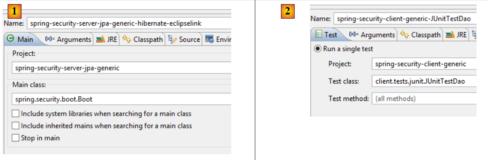 |
Die Tests werden erfolgreich bestanden.
20.5. Das Eclipse-Projekt [spring-security-create-users]
 |
 |
20.5.1. Die Datenbank
Durch die Ausführung des Projekts werden die Tabellen [USERS, ROLES, USERS_ROLES] in der Datenbank [dbproduitscategories] gefüllt:

|
Die erstellten Anmeldedaten [Benutzername/Passwort] lauten wie folgt: [admin/admin], [user/user], [guest/guest]. Standardmäßig sind die Passwörter verschlüsselt.
|
20.5.2. Maven-Konfiguration
Das Projekt ist ein Maven-Projekt, das durch die folgende [pom.xml]-Datei konfiguriert wird:
<?xml version="1.0" encoding="UTF-8"?>
<project xmlns="http://maven.apache.org/POM/4.0.0" xmlns:xsi="http://www.w3.org/2001/XMLSchema-instance"
xsi:schemaLocation="http://maven.apache.org/POM/4.0.0 http://maven.apache.org/xsd/maven-4.0.0.xsd">
<modelVersion>4.0.0</modelVersion>
<groupId>dvp.spring.database</groupId>
<artifactId>spring-security-create-users-jpa</artifactId>
<version>0.0.1-SNAPSHOT</version>
<packaging>jar</packaging>
<name>spring-security-create-users-jpa</name>
<description>création de utilisateurs dans la base [dbproduitscategories]</description>
<parent>
<groupId>org.springframework.boot</groupId>
<artifactId>spring-boot-starter-parent</artifactId>
<version>1.2.3.RELEASE</version>
</parent>
<dependencies>
<!-- Spring security -->
<dependency>
<groupId>org.springframework.boot</groupId>
<artifactId>spring-boot-starter-security</artifactId>
</dependency>
<!-- spring-security-server-jpa-generic -->
<dependency>
<groupId>dvp.spring.database</groupId>
<artifactId>spring-security-server-jpa-generic</artifactId>
<version>0.0.1-SNAPSHOT</version>
</dependency>
</dependencies>
<properties>
<project.build.sourceEncoding>UTF-8</project.build.sourceEncoding>
<java.version>1.7</java.version>
</properties>
<build>
<plugins>
<plugin>
<groupId>org.apache.maven.plugins</groupId>
<artifactId>maven-surefire-plugin</artifactId>
<version>2.18.1</version>
</plugin>
</plugins>
</build>
</project>
- Zeilen 22–25: Abhängigkeit vom Spring Security-Framework. Der Algorithmus zur Passwortverschlüsselung wird von diesem Framework bereitgestellt
- Zeilen 27–31: Abhängigkeit vom soeben erstellten Projekt [spring-security-server-jpa-generic]. Dieses Projekt implementiert die Schichten [repositories] und [JPA] des Projekts;
Letztendlich sehen die Abhängigkeiten wie folgt aus:
 |
20.5.3. Die [Konsole]-Ebene
 |
Da die [Repositorys]- und [JPA]-Schichten durch die Abhängigkeit [spring-security-server-jpa-generic] implementiert werden, muss nur noch die [Konsole]-Schicht implementiert werden.
 |
- [AppConfig] ist die Spring-Konfigurationsklasse des Projekts;
- [CreateUsers] ist die ausführbare Klasse, die Benutzer und Rollen anlegt;
- [Base64Encoder] ist eine Hilfsklasse zur Generierung des Base64-Codes für ein [Login, Passwort]-Paar. Wir haben sie bereits verwendet. Sie wird für dieses Projekt nicht benötigt;
Die Spring-Konfigurationsklasse [AppConfig] sieht wie folgt aus:
package spring.security.install;
import generic.jpa.config.ConfigJpa;
import org.springframework.context.annotation.Configuration;
import org.springframework.context.annotation.Import;
import org.springframework.data.jpa.repository.config.EnableJpaRepositories;
@Configuration
@EnableJpaRepositories(basePackages = { "spring.security.repositories" })
@Import({ ConfigJpa.class })
public class AppConfig {
}
- Zeile 10: Gibt an, wo die [Repositorys] der Anwendung zu finden sind. Sie befinden sich im Paket [spring.security.repositories] der Abhängigkeit [spring-security-server-jpa-generic]
- Zeile 11: Importiert die Beans aus der [ConfigJpa]-Klasse, die die [JPA]-Schicht des Projekts konfiguriert. Diese Klasse befindet sich in der Abhängigkeit [mysql-config-jpa-hibernate]:
 |
Die Klasse [CreateUsers] sieht wie folgt aus:
package spring.security.install;
import generic.jpa.entities.dbproduitscategories.Role;
import generic.jpa.entities.dbproduitscategories.User;
import generic.jpa.entities.dbproduitscategories.UserRole;
import org.springframework.context.annotation.AnnotationConfigApplicationContext;
import org.springframework.security.crypto.bcrypt.BCrypt;
import spring.security.repositories.RoleRepository;
import spring.security.repositories.UserRepository;
import spring.security.repositories.UserRoleRepository;
public class CreateUsers {
public static void main(String[] args) {
// end
System.out.println("Travail en cours...");
// we create three users
String[] logins = { "admin", "user", "guest" };
String[] passwds = { "admin", "user", "guest" };
String[] roles = { "admin", "user", "guest" };
// spring context
AnnotationConfigApplicationContext context = new AnnotationConfigApplicationContext(AppConfig.class);
UserRepository userRepository = context.getBean(UserRepository.class);
RoleRepository roleRepository = context.getBean(RoleRepository.class);
UserRoleRepository userRoleRepository = context.getBean(UserRoleRepository.class);
for (int i = 0; i < logins.length; i++) {
// we retrieve information from user n° i
String login = logins[i];
String password = passwds[i];
String roleName = String.format("ROLE_%s", roles[i].toUpperCase());
// does the role already exist?
Role role = roleRepository.findRoleByName(roleName);
// if it doesn't exist, we create it
if (role == null) {
role = roleRepository.save(new Role(roleName));
}
// does the user already exist?
User user = userRepository.findUserByLogin(login);
// if it doesn't exist, we create it
if (user == null) {
// hash the password with bcrypt
String crypt = BCrypt.hashpw(password, BCrypt.gensalt());
// save user
user = userRepository.save(new User(null, null, login, login, crypt));
// we create the relationship with the role
userRoleRepository.save(new UserRole(user, role));
} else {
// the user already exists - does he/she have the required role?
boolean trouvé = false;
for (Role r : userRepository.getRoles(user.getId())) {
if (r.getName().equals(roleName)) {
trouvé = true;
break;
}
}
// if not found, we create the relationship with the role
if (!trouvé) {
userRoleRepository.save(new UserRole(user, role));
}
}
}
// closing Spring context
context.close();
// end
System.out.println("Travail terminé...");
}
}
- Zeilen 22–24: Definieren Sie den Benutzernamen, das Passwort und die Rolle für drei Benutzer;
- Zeile 27: Der Spring-Kontext wird aus der Konfigurationsklasse [AppConfig] erstellt;
- Zeilen 28–30: Abrufen der Referenzen auf die drei [Repository]-Objekte, die zum Anlegen eines Benutzers verwendet werden können;
- Zeile 31: Erstellt die drei Benutzer;
- Zeilen 33–35: Informationen zum Anlegen von Benutzer #i;
- Zeile 37: Wir prüfen, ob die Rolle bereits existiert;
- Zeilen 39–41: Falls nicht, erstellen wir sie in der Datenbank. Sie erhält einen Namen der Form [ROLE_XX];
- Zeile 43: Wir prüfen, ob der Benutzername bereits existiert;
- Zeilen 45–52: Wenn der Benutzername nicht existiert, wird er in der Datenbank angelegt;
- Zeile 47: Wir verschlüsseln das Passwort. Hier verwenden wir die Klasse [BCrypt] aus Spring Security (Zeile 8). Wir benötigen daher die Archive für dieses Framework. Die Datei [pom.xml] enthält diese Abhängigkeit:
<dependency>
<groupId>org.springframework.boot</groupId>
<artifactId>spring-boot-starter-security</artifactId>
</dependency>
- Zeile 49: Der Benutzer wird in der Datenbank gespeichert;
- Zeile 51: ebenso wie die Beziehung, die ihn mit seiner Rolle verknüpft;
- Zeilen 55–60: Wenn der Benutzer bereits existiert, prüfen wir, ob die Rolle, die wir ihm zuweisen möchten, bereits zu seinen Rollen gehört;
- Zeilen 62–64: Wenn die gesuchte Rolle nicht gefunden wird, wird eine Zeile in der Tabelle [USERS_ROLES] erstellt, um den Benutzer mit seiner Rolle zu verknüpfen;
- Wir haben keine Absicherung gegen mögliche Ausnahmen vorgenommen. Dies ist eine Hilfsklasse zum schnellen Anlegen von Benutzern;
Um das Projekt auszuführen, führen Sie die Laufkonfiguration mit dem Namen [spring-security-create-users-hibernate-eclipselink] aus:
 |
Wir haben soeben zwei sichere Webdienste erstellt:
- einen mit einer [Sicherheit / Web / JDBC / MySQL]-Architektur;
- das andere mit einer [Sicherheits-/Web-/Hibernate-/MySQL-]Architektur;
Wir werden uns nun zwei weitere Architekturen ansehen:
- eine [Sicherheit / Web / EclipseLink / SQL Server 2014 Express]-Architektur;
- eine Architektur [Sicherheit / Web / OpenJpa / Oracle Express];
20.5.4. eine [Sicherheit / Web / EclipseLink / SQL Server]-Architektur
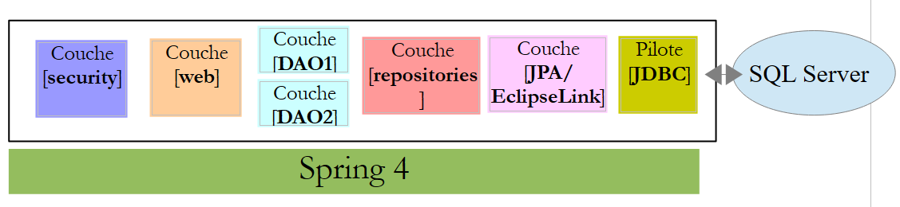 |
 |
- In [1] laden wir die Projekte, indem wir eine [JDBC / SQL Server]-Schicht und eine [JPA / EclipseLink / SQL Server]-Schicht konfigurieren;
Hinweis: Drücken Sie Alt-F5 und generieren Sie anschließend alle Maven-Projekte neu.
Wir gehen davon aus, dass das SQL Server-DBMS läuft und die Datenbank [dbproduitscategories] generiert wurde. Zunächst müssen wir die Tabellen [USERS, ROLES, USERS_ROLES] in dieser Datenbank füllen. Führen Sie dazu die Ausführungskonfiguration mit dem Namen [spring-security-create-users-hibernate-eclipselink] aus:
 |  |
Dadurch sollten die drei Tabellen mit Daten gefüllt werden:
 |  |
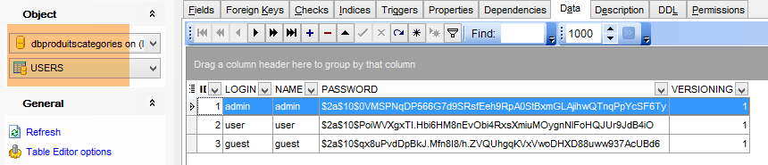 |
 |
- Starten Sie den sicheren Webdienst mit der Konfiguration namens [spring-security-server-jpa-generic-hibernate-eclipselink][1];
- Führen Sie den JUnitTestDao-Test mit der Konfiguration [spring-security-client-generic-JUnitTestDao][2] aus. Er sollte erfolgreich sein [3];
 |
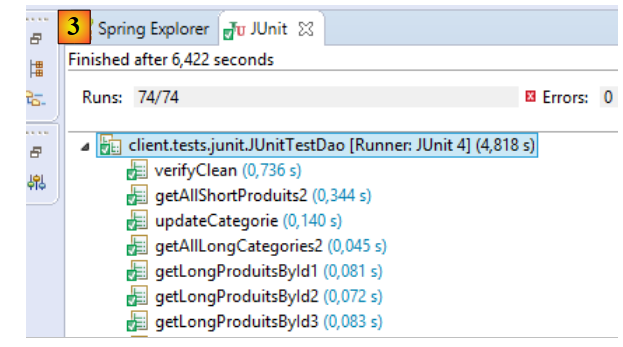 |
20.5.5. Architektur [Sicherheit / Web / OpenJpa / Oracle Express]
 |
 |
- Laden Sie in [1] die Projekte, die eine [JDBC / Oracle Express]-Schicht und eine [JPA / OpenJpa / Oracle Express]-Schicht konfigurieren;
Hinweis: Drücken Sie Alt-F5 und generieren Sie anschließend alle Maven-Projekte neu.
Wir gehen davon aus, dass das Oracle Express-DBMS läuft und die Datenbank [dbproduitscategories] generiert wurde. Zunächst müssen wir die Tabellen [USERS, ROLES, USERS_ROLES] in dieser Datenbank füllen. Führen Sie dazu die Ausführungskonfiguration mit dem Namen [spring-security-create-users-openjpa] aus:
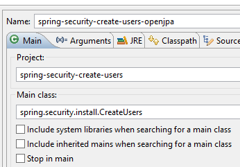 | 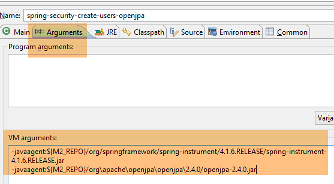 |
Dadurch sollten die drei Tabellen mit Daten gefüllt werden:
 |  |
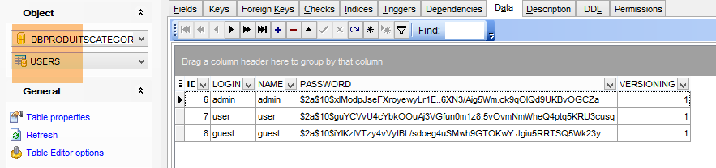 |
 |
- Starten Sie den sicheren Webdienst mit der Konfiguration namens [spring-security-server-jpa-generic-openjpa][1-2];
- Führen Sie den JUnitTestDao-Test mit der Konfiguration [spring-security-client-generic-JUnitTestDao][3] aus. Er sollte erfolgreich sein [4];
 |
 |